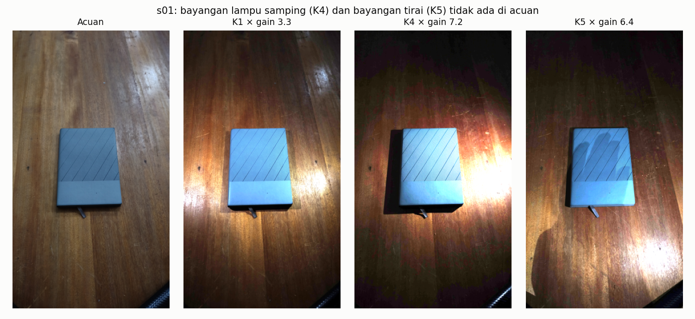
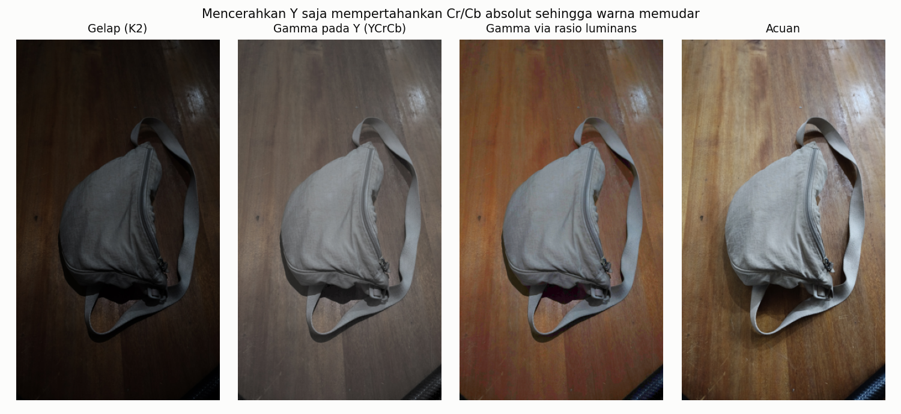
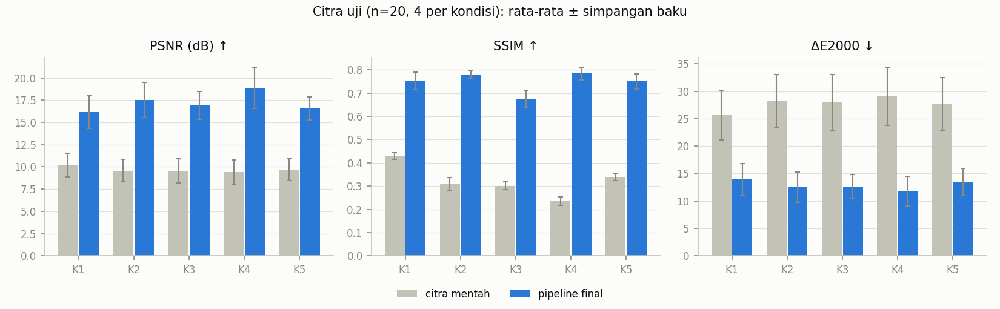
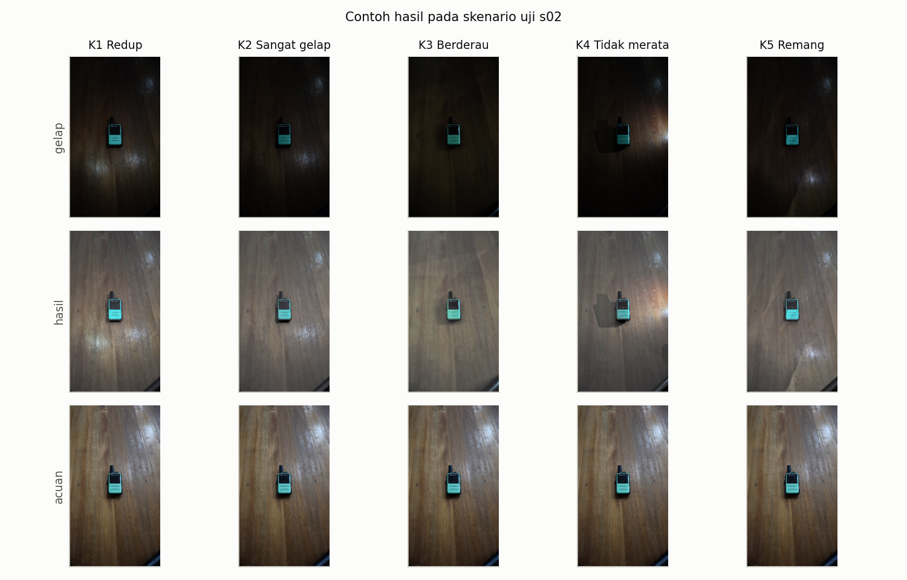
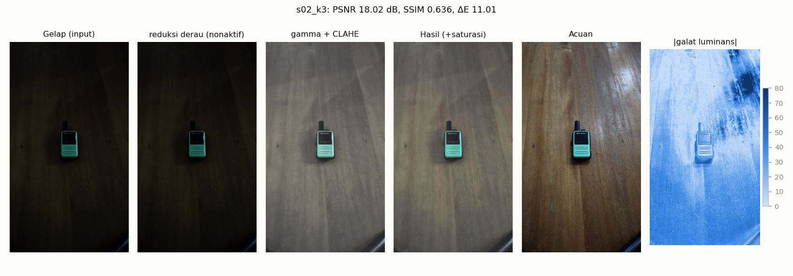

| Mata kuliah | Pengolahan Citra Digital, Teknik Informatika - UTS (take-home) |
| Topik | No. 6: Peningkatan kualitas citra minim cahaya atau berderau |
| Kelompok | [isi nama kelompok dan anggota] |
| Tanggal | 13-10-2026 |
| Repository | [isi tautan] |
Foto yang diambil dalam cahaya minim memiliki luminans rendah, rentang kontras sempit, dan pada ISO tinggi derau yang kuat. Mencerahkan citra secara langsung ikut menguatkan derau dan dapat memudarkan atau menggeser warna, sehingga pemilihan dan urutan operasi menentukan hasil.
Project ini membangun pipeline pengolahan citra klasik (tanpa deep learning dan tanpa model pra-latih) untuk memperbaiki citra minim cahaya/berderau, lalu mengukurnya terhadap citra acuan dari adegan yang sama dengan pencahayaan baik. Tujuannya bukan skor tertinggi, melainkan keputusan rancangan yang didukung angka:
Seluruh parameter disetel hanya pada 6 skenario dev; angka akhir dilaporkan hanya dari 4 skenario uji yang tidak pernah dipakai saat tuning.
Koreksi gamma. Pemetaan titik s = 255·(r/255)γ. Nilai γ < 1 mencerahkan area gelap lebih kuat daripada area terang. Gamma adaptif memilih γ per citra agar rata-rata luminans ternormalisasi μ menjadi target t: γ = ln t / ln μ, sehingga μγ = t.
Ekualisasi histogram (HE). Memetakan intensitas dengan fungsi distribusi kumulatif (CDF) sehingga histogram keluaran mendekati seragam: sk = round((cdf(k) − cdfmin) / (N − cdfmin) · 255). CLAHE melakukan HE per ubin dengan histogram yang dipotong pada clip limit untuk membatasi penguatan derau, lalu menginterpolasi antar-ubin.
Retinex (SSR/MSR). Menganggap citra sebagai hasil kali iluminasi dan reflektansi; iluminasi diperkirakan dengan blur Gaussian besar sehingga R = log I − log(Gσ ∗ I). MSR merata-ratakan beberapa σ.
Reduksi derau. Median mengganti piksel dengan median tetangga k×k (tahan derau impuls, menjaga tepi). Gaussian adalah rata-rata berbobot (menghaluskan tepi). Bilateral menambah bobot kemiripan intensitas sehingga tepi terjaga. Non-local means (NLM) merata-ratakan piksel yang lingkungannya mirip, di mana pun letaknya.
Unsharp mask. I′ = I + a·(I − Gσ ∗ I) menguatkan komponen frekuensi tinggi dengan kekuatan a.
Ruang warna. Perbaikan kontras dapat diterapkan pada kanal luminans (Y pada YCrCb, L pada Lab, V pada HSV) agar rona tidak bergeser, atau pada tiap kanal RGB. Karena Cr/Cb menyimpan selisih warna dalam satuan absolut, menaikkan Y saja menurunkan saturasi relatif. Alternatifnya adalah mengalikan ketiga kanal RGB dengan rasio Ybaru/Ylama.
Metrik. PSNR = 10·log10(255²/MSE) mengukur galat piksel. SSIM (Wang dkk., 2004) membandingkan luminans, kontras, dan struktur lokal (jendela Gaussian σ = 1,5, rata-rata kanal RGB). ΔE2000 (CIEDE2000) mengukur beda warna perseptual di ruang CIELAB; ΔE ≈ 2 nyaris tak terlihat, ΔE > 10 jelas berbeda. Uji Wilcoxon signed-rank menguji apakah median selisih berpasangan dua metode pada citra yang sama berbeda dari nol tanpa asumsi normalitas.
Pengambilan. Sepuluh skenario benda di atas meja kayu (s01-s10) dipotret sendiri dengan ponsel TECNO CN7c (f/1,8, 5,56 mm) pada penyangga tetap, 11 Oktober 2026. Tiap skenario terdiri dari satu acuan dan lima citra gelap: total 60 citra JPEG 2304×4096, 50 pasangan evaluasi.
| Jenis | Kondisi | ISO | Rana | Luminans rata-rata (rentang) |
|---|---|---|---|---|
| Acuan | semua lampu menyala | 800 | 1/20 s | 98,4 (85,6-119,0) |
| K1 | Redup: sebagian lampu mati | 100 | 1/30 s | 32,2 (22,4-45,3) |
| K2 | Sangat gelap: satu lampu kecil | 100 | 1/30 s | 22,6 (16,0-32,3) |
| K3 | Berderau: cahaya redup, ISO tinggi | 3200 | 1/90 s | 25,3 (18,1-34,7) |
| K4 | Tidak merata: satu lampu dari samping | 100 | 1/30 s | 19,9 (12,2-30,6) |
| K5 | Remang: tirai tertutup, tanpa lampu | 100 | 1/30 s | 24,5 (13,7-36,5) |
Angka ISO/rana dibaca dari EXIF (data/metadata.csv). K4 ternyata kondisi paling
gelap, dan K5 tidak lebih gelap dari K2.
Ground truth. Acuan adalah foto adegan yang sama dengan pencahayaan ruangan penuh, tanpa penyuntingan. Acuan sendiri tidak sempurna: ISO 800 masih menyisakan derau halus dan ada pantulan lampu di meja.
Validasi pasangan. audit_dataset.py mencocokkan magnitudo gradien
(tidak peka terhadap kecerahan) antara acuan dan citra gelap. Pergeseran global
median 0,22 px (maks. 1,30 px pada skala 1/4), rotasi maks. 0,2°. Dua pasangan
K3 melewati ambang 1 px, tetapi mengompensasi pergeserannya tidak mengubah SSIM
(≤ 0,006): itu efek derau pada estimasi. Ke-50 pasangan dipakai.
Perbedaan adegan. Kamera tidak bergeser, tetapi cahaya mengubah isi citra: bayangan keras di K4, bayangan tirai di K5, dan posisi pantulan meja yang berbeda (Gambar 1). Galat ini tidak bisa dihapus metode apa pun yang tidak melihat acuan.

Pembagian data. Per skenario dengan seed 42 (data/split.json): dev s01, s03,
s04, s06, s07, s08 (30 citra) dan uji s02, s05, s09, s10 (20 citra). Pembagian per
skenario mencegah lima citra dari adegan yang sama bocor antara dev dan uji.
Runner eksperimen menolak memuat skenario uji, dan perilaku ini diuji oleh unit test.
Privasi: tidak ada wajah, plat nomor, atau informasi pribadi.
Seluruh tahap dapat diatur lewat JSON (src/pipeline.py, configs/final.json),
termasuk urutan tahap 2-3 dan ruang warna, sehingga setiap eksperimen hanya
mengganti konfigurasi. Alasan tiap pilihan:
INTER_AREA merata-ratakan 16
piksel, sehingga derau sudah turun ±4×; filter tambahan hanya mengaburkan
tekstur (Bagian 6.2).
src/from_scratch.py hanya memakai NumPy.
np.bincount, CDF dengan np.cumsum,
LUT round((cdf − cdf_min)·255/(N − cdf_min)). Tiga detail disamakan dengan
OpenCV: (1) citra konstan dikembalikan apa adanya, (2) faktor skala dihitung dalam
float32, (3) pembulatan round-half-to-even (np.rint, setara cvRound).np.pad(mode="edge"), setara
BORDER_REPLICATE OpenCV), jendela dengan sliding_window_view, elemen tengah
dengan np.partition. Diproses per potongan baris agar memori sementara
≤ 64 MB. Karena k×k selalu ganjil, median adalah nilai tengah persis.Verifikasi (experiments/verify_from_scratch.py) pada 10 citra gelap (2 per
kondisi): selisih piksel maksimum dan rata-rata = 0 untuk kedua operasi, pada
skala kerja maupun resolusi penuh. 57 unit test (citra konstan, 1×N, ukuran
ganjil/genap, k = 3/5/7/9, RGB, input tidak valid) juga lulus dengan selisih 0.
| Operasi (10 citra) | Resolusi | Versi sendiri | OpenCV | Rasio |
|---|---|---|---|---|
| Ekualisasi histogram | 576×1024 | 3,8 ms | 0,6 ms | 6× |
| Median 3×3 (RGB) | 576×1024 | 156 ms | 0,8 ms | 207× |
| Median 5×5 (RGB) | 576×1024 | 428 ms | 4,1 ms | 114× |
| Ekualisasi histogram | 2304×4096 | 59 ms | 3,6 ms | 17× |
| Median 3×3 (RGB) | 2304×4096 | 1,80 s | 9,9 ms | 185× |
| Median 5×5 (RGB) | 2304×4096 | 5,58 s | 37,7 ms | 148× |
Versi sendiri lebih lambat karena NumPy membuat salinan k² nilai per piksel lalu
mempartisinya, sedangkan OpenCV memakai algoritma median berbasis histogram
bergeser dan instruksi SIMD dalam C++. Kedua operasi dipakai di pipeline:
ekualisasi histogram sebagai metode pembanding (T29), dan median dari nol pada T30
memberi hasil identik dengan cv2.medianBlur di seluruh 30 citra dev.
Setiap tahap divariasikan dengan tahap lain dikunci. Metrik dihitung pada skala 1/4
untuk 30 citra dev; semua perbandingan berpasangan diuji dengan Wilcoxon
(results/wilcoxon_dev.csv).
Luminans rata-rata keluaran menjelaskan peringkatnya (acuan: rata-rata 96, simpangan baku 36,5). HE memaksa histogram seragam sehingga terlalu terang dan terlalu kontras (131; 72,6). SSR/MSR merentangkan reflektansi ke 0-255 sehingga jauh terlalu terang (±173). CLAHE tunggal hanya menaikkan kontras lokal dan tetap terlalu gelap (43). Gamma adaptif tepat mengenai kecerahan (97) tetapi kontrasnya kurang (24,8), dan celah inilah yang coba diisi CLAHE ringan pada tuning (Bagian 6.4). Gamma adaptif mengalahkan gamma 0,5 pada PSNR dan ΔE (24/30 citra, p < 0,001) karena kecerahan citra gelap bervariasi antarskenario (22-45 pada K1). Pada parameter bawaan, menambahkan CLAHE (clip 1,5) tidak menaikkan SSIM (p = 0,81) dan menurunkan PSNR (p < 0,001).
Pada skala 1/4, semua filter menurunkan SSIM, termasuk pada K3 (ISO 3200):
tanpa filter 0,723, median 3×3 0,690, bilateral 0,680, NLM h=3 0,680 (tanpa filter
lebih baik di 27/30 citra, p < 0,001). Dugaan penyebabnya, memperkecil dengan
INTER_AREA sudah meredam derau, diuji dengan mengulang eksperimen pada skala
1/2 dan penuh (Gambar 4). Pada resolusi penuh urutannya terbalik: median dan
bilateral unggul, dan pada K3 bilateral menaikkan SSIM dari 0,645 ke 0,701.
Kesimpulannya, kebutuhan reduksi derau bergantung pada resolusi kerja.

Tuning bertahap dengan kriteria peringkat gabungan PSNR/SSIM/ΔE (lihat
docs/parameter_rationale.md). Target gamma adaptif 0,38 (SSIM tertinggi
dibanding 0,40, p = 0,007). CLAHE terbaik pada clip 1,0 dan tile 16 (Gambar 5);
clip lebih besar selalu menurunkan SSIM. Ukuran kernel 3/5/7 untuk median dan
Gaussian semuanya kalah dari tanpa filter. Unsharp dengan amount > 0 menurunkan
SSIM (29/30 citra, p < 0,001). Saturasi optimum 1,5 dari grid 1,0-2,5.

Konfigurasi dikunci (git tag config-locked) sebelum citra uji dievaluasi.
| Metode | PSNR (dB) ↑ | SSIM ↑ | ΔE2000 ↓ | Waktu (ms) |
|---|---|---|---|---|
| Citra mentah (baseline) | 9,68 ± 1,20 | 0,322 ± 0,067 | 27,73 ± 4,54 | - |
| Ekualisasi histogram (dari nol) | 11,12 ± 1,50 | 0,561 ± 0,092 | 20,84 ± 3,04 | 11 |
| CLAHE | 11,17 ± 1,20 | 0,504 ± 0,054 | 23,68 ± 3,89 | 5 |
| MSR | 11,50 ± 1,71 | 0,632 ± 0,095 | 22,76 ± 5,59 | 601 |
| Gamma 0,5 | 15,51 ± 1,53 | 0,720 ± 0,038 | 15,71 ± 2,87 | 7 |
| Gamma adaptif 0,4 | 17,16 ± 1,50 | 0,739 ± 0,041 | 13,21 ± 2,02 | 9 |
| Pipeline final | 17,21 ± 1,90 | 0,749 ± 0,049 | 12,84 ± 2,45 | 14 |
Pipeline final lebih baik dari baseline pada 20 dari 20 citra untuk ketiga metrik (Wilcoxon p < 0,001; median kenaikan PSNR +7,2 dB, SSIM +0,41, ΔE −14,2). Dibanding gamma adaptif standar, SSIM (+0,012, p = 0,002) dan ΔE (−0,51, p = 0,012) lebih baik, sedangkan PSNR setara (p = 0,57). Pipeline butuh 14 ms per citra pada skala kerja dan 177 ms pada resolusi penuh.

| Kondisi | PSNR mentah → final | SSIM mentah → final | ΔE mentah → final |
|---|---|---|---|
| K1 Redup | 10,22 → 16,18 | 0,428 → 0,753 | 25,64 → 13,89 |
| K2 Sangat gelap | 9,57 → 17,50 | 0,309 → 0,780 | 28,28 → 12,46 |
| K3 Berderau | 9,53 → 16,89 | 0,301 → 0,676 | 27,94 → 12,64 |
| K4 Tidak merata | 9,39 → 18,90 | 0,235 → 0,785 | 29,06 → 11,76 |
| K5 Remang | 9,67 → 16,56 | 0,338 → 0,751 | 27,71 → 13,42 |
K4 justru mendapat skor terbaik walau paling gelap; dugaan kami, lampu samping memberi kontras lokal yang kuat sehingga struktur tetap terekam. K3 tertinggal paling jauh pada SSIM.

Empat citra uji dengan SSIM terendah dipilih otomatis
(experiments/failure_cases.py): s02_k3 (0,636), s09_k3 (0,661), s05_k3 (0,684),
dan s09_k1 (0,709). Keluaran tiap tahap disimpan dan diukur
(results/failures/stage_metrics.csv).

| Kasus | Tahap penyebab | Bukti | Usulan |
|---|---|---|---|
| s02_k3, s05_k3, s09_k3 (K3) | Pengambilan (bukan pipeline): ISO 3200 + 1/90 s dan pengurangan derau internal ponsel menghapus tekstur kayu | Energi frekuensi tinggi keluaran hanya 0,51 (s02), 0,49 (s05), 0,82 (s09) × acuan; SSIM pita tengah 0,57-0,67; tahap kontras menaikkan SSIM 0,29 → 0,63 tetapi tidak bisa mengembalikan detail yang tidak terekam | Uji A: pemertajaman khusus ISO tinggi. Ambil K3 dengan rana lebih lama atau gabungkan beberapa bidikan (multi-frame averaging) |
| s09_k1, juga semua citra s09/s10 | Tahap 3 (gamma adaptif): target kecerahan tetap 0,38 → luminans ±97, sedangkan acuan s09/s10 lebih terang (114-119) | Selisih luminans −18 s.d. −29 pada seluruh 10 citra s09/s10; menyamakan kecerahan menaikkan SSIM luminans hanya +0,01-0,04 tetapi ΔE turun hingga 5 (s09_k4: 14,8 → 9,8) | Target kecerahan tidak bisa diketahui tanpa acuan; perkirakan dari isi adegan atau biarkan pengguna mengatur. Laporkan sebagai batas metode global |
| s09_k1 (K1) | Tahap 3 + adegan: gradien cahaya berbeda dari acuan; derau gelap ikut diperkuat (frek. tinggi 1,32 × acuan) | SSIM pita bawah 0,63; porsi piksel dengan iluminasi relatif < 0,6× median paling tinggi di K1 (24%, dev) | Uji C: koreksi iluminasi lokal parsial |
Hipotesis awal PRD. K5 tidak hampir hitam (luminans 24,5, SSIM akhir 0,751). Derau berwarna K3 bukan masalah utama setelah diperkecil; masalahnya tekstur yang hilang. Halo CLAHE dihindari karena clip 1,0 terpilih; clip ≥ 2 memang menurunkan SSIM. Saturasi piksel pada K4 kecil: ≤ 0,8% piksel keluaran bernilai ≥ 254 (acuan s09 sendiri 0,46%).
Menguji usulan perbaikan (experiments/fix_eval.py, disetel di dev, diuji sekali
di uji, terpisah dari hasil utama):
Keterbatasan. Dev hanya 6 skenario dan uji 4 skenario dengan latar meja yang sama, sehingga p-value bersifat indikatif dan generalisasi ke adegan lain belum teruji. Acuan diambil pada ISO 800, bukan ISO dasar. Evaluasi utama pada skala 1/4.
Saran. (1) Pilih reduksi derau berdasarkan ISO EXIF bila memproses resolusi penuh (median 3×3 atau bilateral untuk ISO tinggi). (2) Gabungkan koreksi iluminasi parsial (perbaikan C) untuk kondisi redup. (3) Ambil acuan pada ISO 100 dengan tripod dan tambahkan adegan dengan latar berbeda.
| Peran | Nama | Kontribusi utama | Commit |
|---|---|---|---|
| Ketua dan integrator | [isi] | Rancangan pipeline, integrasi modul, repository, jadwal | [isi tautan] |
| Penanggung jawab data | [isi] | Pemotretan 60 citra, dokumentasi kondisi, audit pasangan | [isi tautan] |
| Pengembang algoritma | [isi] | Ekualisasi histogram dan filter median dari nol, verifikasi | [isi tautan] |
| Penguji dan penulis | [isi] | Skrip evaluasi, eksperimen, analisis kegagalan, laporan | [isi tautan] |
Dosen pengampu mengizinkan penggunaan alat bantu AI tanpa batasan untuk project ini. Penggunaannya kami catat sebagai berikut.
| Alat | Tujuan | Bagian yang terbantu |
|---|---|---|
| Claude (Anthropic), lewat Claude Code | Menulis kode dan menjalankan eksperimen | src/ (termasuk from_scratch.py), experiments/, audit_dataset.py, run_all.py, tests/ |
| Claude (Anthropic), lewat Claude Code | Analisis dan penulisan | Pemecahan PRD menjadi tugas, draf laporan ini, README, docs/parameter_rationale.md, docs/dataset_notes.md |
Yang dikerjakan kelompok sendiri: pemotretan seluruh 60 citra dan dokumentasi kondisinya, [isi: peninjauan kode, pengecekan angka, penyuntingan laporan, presentasi].
Seluruh angka di laporan dihasilkan oleh skrip di repository dan dapat diulang
dengan python run_all.py (evaluasi akhir) dan python run_all.py --experiments
(seluruh eksperimen dev). Tidak ada angka atau ground truth yang dikarang atau
disunting manual. [Konfirmasi sebelum dikumpulkan: setiap anggota telah
mempelajari kode dan mampu menjelaskan seluruh tahap pipeline, termasuk kedua
operasi dari nol.]
pip install -r requirements.txt
python -m pytest # 65 unit test
python run_all.py # audit, verifikasi, evaluasi uji, analisis kegagalan
python run_all.py --experiments # + seluruh eksperimen dan tuning dev
python -m experiments.fix_eval # perbaikan tambahan (Bagian 7.2)
python -m experiments.figures # gambar laporan